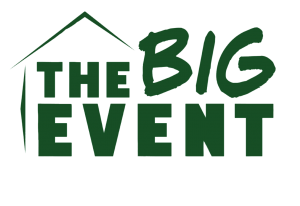

Service
I would like to be more involved in giving back to the community in the near future. I am hoping to get involved in The Big Event here at Texas A&M this year. I have always wanted to participate in it but I have not been able to these past couple years due to other commitments. I love the idea of doing something that helps the community and want to finally be able to do my part this year. I also am looking to get involved in other community service activities during the rest of my time here at Texas A&M by joining organizations that participate in those.